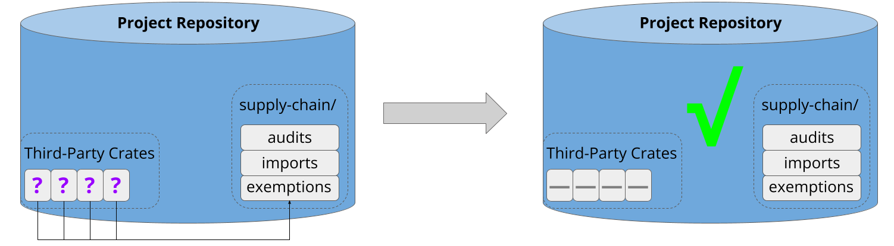
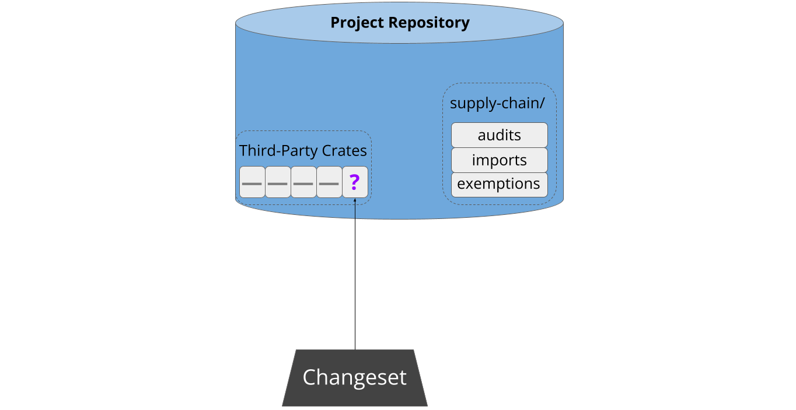
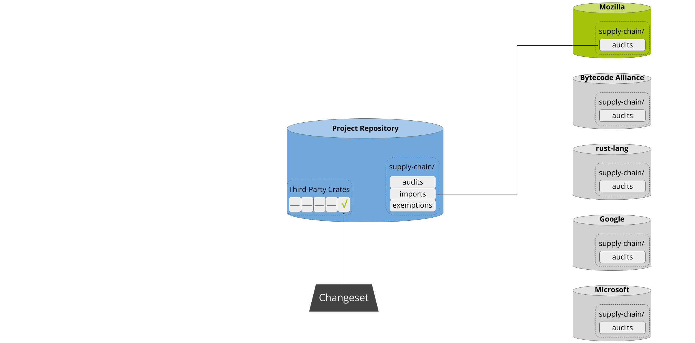
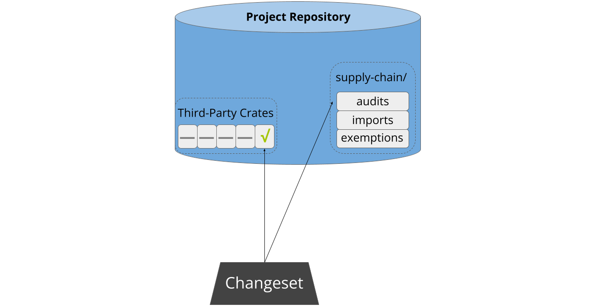
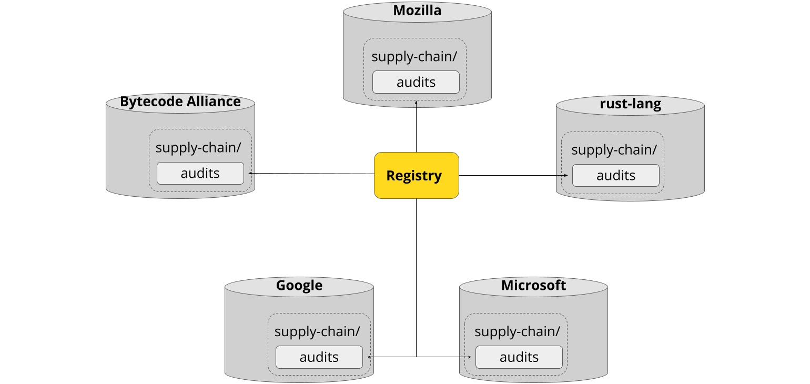

Cargo Vet
The cargo vet subcommand is a tool to help projects ensure that third-party
Rust dependencies have been audited by a trusted entity. It strives to be
lightweight and easy to integrate.
When run, cargo vet matches all of a project's third-party dependencies
against a set of audits performed by the project authors or entities they trust.
If there are any gaps, the tool provides mechanical assistance in performing and
documenting the audit.
The primary reason that people do not ordinarily audit open-source dependencies
is that it is too much work. There are a few key ways that cargo vet aims to
reduce developer effort to a manageable level:
-
Sharing: Public crates are often used by many projects. These projects can share their findings with each other to avoid duplicating work.
-
Relative Audits: Different versions of the same crate are often quite similar to each other. Developers can inspect the difference between two versions, and record that if the first version was vetted, the second can be considered vetted as well.
-
Deferred Audits: It is not always practical to achieve full coverage. Dependencies can be added to a list of exceptions which can be ratcheted down over time. This makes it trivial to introduce
cargo vetto a new project and guard against future vulnerabilities while vetting the pre-existing code gradually as time permits.
Note:
cargo vetis under active development. If you're interested in deploying it, get in touch.
Motivation
The discussion below covers the high-level motivation for building this system. If you're just interested in how it works, you can skip to the next section.
Security Risks of Third-Party Code
Low-friction reuse of third-party components — via systems like crates.io or npm — is an essential element of modern software development. Unfortunately, it also widens the set of actors who can introduce a security vulnerability into the final product.
These defects can be honest mistakes, or intentional supply-chain attacks. They can exist in the initial version, or be introduced later as an update. They can be introduced by the original author, or by a new maintainer who acquires control over the release of subsequent versions. Taken together, these avenues constitute a demonstrated and growing risk to software security.
Ideally, the composition model would include technical guarantees to isolate components from each other and prevent a defect in one component from compromising the security of the entire program (e.g. WebAssembly nanoprocesses). However, that is often not a realistic solution for many projects today. In the absence of technical guarantees, the responsibility for ensuring software integrity falls to humans. But reviewing every line of third-party code can be very time-consuming and difficult, and undermines the original premise of low-friction code reuse. Practically speaking, it often just doesn't happen — even at large well-resourced companies.
Tackling This in Rust
There are two properties of Rust that make this problem easier to solve.
First, it's relatively easy to audit Rust code. Unlike C/C++, Rust code is memory-safe by default, and unlike JavaScript, there is no highly-dynamic shared global environment. This means that you can often reason at a high level about the range of a module's potential behavior without carefully studying all of its internal invariants. For example, a complicated string parser with a narrow interface, no unsafe code, and no powerful imports has limited means to compromise the rest of the program. This also makes it easier to conclude that a new version is safe based on a diff from a prior trusted version.
Second, nearly everyone in the Rust ecosystem relies on the same set of basic tooling — Cargo and crates.io — to import and manage third-party components, and there is high overlap in the dependency sets. For example, at the time of writing, Firefox, wasmtime, and the Rust compiler specified 406, 310, and 357 crates.io dependencies respectively1. Ignoring version, each project shares about half of its dependencies with at least one of the other two projects, and 107 dependencies are common across all three.
This creates opportunities to share the analysis burden in an systematic way. If you're able to discover that a trusted party has already audited the exact crate release you're using, you can gain quite a bit of confidence in its integrity with no additional effort. If that part has audited a different version, you could consider either switching to it, or merely auditing the diff between the two. Not every organization and project share the same level of risk tolerance, but there is a lot of common ground, and substantial room for improvement beyond no sharing at all.
Footnotes
The following command string computes the names of the crates.io packages
specified in Cargo.lock. Note the filtering for path and git dependencies,
along with removing duplicates due to different versions of the same crate:
cat Cargo.lock | grep -e "name = " -e "source = \"registry" | awk '/source =/ { print prv_line; next } { prv_line = $0 }' | sort | uniq
How it Works
Most developers are busy people with limited energy to devote to supply-chain integrity. Therefore, the driving principle behind cargo-vet is to minimize friction and make it as easy as possible to do the right thing. It aims to be trivial to set up, fit unobtrusively into existing workflows, guide people through each step, and allow the entire ecosystem to share the work of auditing widely-used packages.
This section provides a high-level overview of how the system operates to achieve these goals.
Setup
Cargo-vet is easy to set up. Most users will already have a repository with some pre-existing third-party dependencies:
Cargo-vet can enabled by adding the tool as a linter and running cargo vet init, which creates some metadata in the repository:
This takes about five minutes, and crucially, does not require auditing the existing dependencies. These are automatically added to the exemptions list:

This makes it low-effort to get started, and facilitates tackling the backlog incrementally from an approved state.
Adding New Third-Party Code
Sometime later, a developer attempts to pull new third-party code into the project. This might be a new dependency, or an update to an existing one:

As part of continuous integration, cargo-vet analyzes the updated build graph to verify that the new code has been audited by a trusted organization. If not, the patch is refused:

Next, cargo-vet assists the developer in resolving the situation. First, it scans the registry to see if any well-known organizations have audited that package before:

If there’s a match, cargo-vet informs the developer and offers the option to add that organization to the project’s trusted imports:

This enables projects to lazily build up an increasingly wide set of approved
crates. Approval of both import and audit submissions automatically falls to the
code owners of the supply-chain/ directory, which should consist of either
project leadership or a dedicated security team.
Auditing Workflow
It may of course be the case that the developer needs to perform the audit themselves, and cargo-vet streamlines this process. Often someone will have already audited a different version of the same crate, in which case cargo-vet computes the relevant diffs and identifies the smallest one1. After walking the developer through the process of determining what to audit, it then presents the relevant artifacts for inspection, either locally or on Sourcegraph.
Cargo-vet minimizes developer friction by storing audits in-tree. This means that developers don’t need to navigate or authenticate with an external system. Interactions with cargo-vet are generally triggered when a developer creates a changeset adding new third-party code, and this design allows them to simply submit the relevant audits as part of that changeset:

Sharing the Work
Cargo-vet’s mechanisms for sharing and discovery are built on top of this decentralized storage. Imports are implementing by pointing directly to the audit files in external repositories, and the registry is merely an index of such files from well-known organizations:

This also means there’s no central infrastructure for an attacker to compromise. Imports used to vet the dependency graph are always fetched directly from the relevant organization, and only after explicitly adding that organization to the trusted set.
Audit sharing is a key force-multiplier behind cargo vet, but it is not
essential. Projects can of course decline to add any imports and perform all
audits themselves.
Additional Features
Cargo-vet has a number of advanced features under the hood — it supports custom audit criteria, configurable policies for different subtrees in the build graph, and filtering out platform-specific code. These features are all completely optional, and the baseline experience is designed to be simple and require minimal onboarding. You can learn more about them in the subsequent chapters of this book.
Footnotes
Differential audits work even for crates in the exemptions list. While it might seem counter-intuitive to perform a relative security audit against an unknown base, doing so still provides meaningful protection against future supply-chain attacks.
Tutorial
This chapter walks through the steps of deploying and using cargo vet, with
a survey of its key features.
Installation
Installing cargo vet can be done through Cargo:
$ cargo install cargo-vet
Afterwards you can confirm that it's installed via:
$ cargo vet --version
Setup
Now that you've installed cargo vet, you're ready to set it up for your project. Move
into the top-level project directory and execute the following:
$ cargo vet
error: cargo vet is not configured
To be useful, cargo vet needs to know which audits have been performed and
what policy should be enforced. By default, this information is stored next to
Cargo.lock in a directory called supply-chain. This location is
configurable.
To get started, you can invoke:
$ cargo vet init
This creates and populates the supply-chain directory. It contains two files:
audits.toml and config.toml. The exemptions table of config.toml is
populated with the full list of third-party crates currently used by the
project. The files in this directory should be added to version control along
with Cargo.lock.
Now, try vetting again:
$ cargo vet
Vetting Succeeded (X exempted)
You're now up and running, though with an empty audit set: vetting only succeeds because your list of exceptions contains the exact set of current dependencies used in your project. Generally speaking, you should try to avoid more exceptions, and ideally seek to shrink the list over time.
Audit Criteria
Before you can go about auditing code, you need to decide what you want the audits to entail. This is expressed with "audit criteria", which are just labels corresponding to human-readable descriptions of what to check for.
cargo vet comes pre-equipped with two built-in criteria:
safe-to-run and
safe-to-deploy. You can use these without
any additional configuration.
Custom Criteria
You can also specify arbitrary custom criteria in audits.toml. For example:
[criteria.crypto-reviewed]
description = '''
The cryptographic code in this crate has been reviewed for correctness by a
member of a designated set of cryptography experts within the project.
'''
The full feature set is documented here.
Multiple Sets of Criteria
There are a number of reasons you might wish to operate with multiple sets of criteria:
- Applying extra checks to some crates: For example, you might define
crypto-reviewedcriteria and require them for audits of crates which implement cryptographic algorithms that your application depends on. - Relaxing your audit requirements for some crates: For example, you might
decide that crates not exposed in production can just be
safe-to-runrather thansafe-to-deploy, since they don't need to be audited for handling adversarial input. - Improving Sharing: If one project wants to audit for issues A and B, and another project want to audit for B and C, defining separate sets of criteria for A, B, and C allows the two projects to partially share work.
You can define and use as many separate sets of criteria as you like.
Importing Audits
The fastest way to shrink the exemptions list is to pull in the audit sets from
other projects that you trust via imports directives in config.toml. This
directive allows you to virtually merge audit lists from other projects into
your own:
[imports.foo]
url = "https://raw.githubusercontent.com/foo-team/foo/main/supply-chain/audits.toml"
[imports.bar]
url = "https://hg.bar.org/repo/raw-file/tip/supply-chain/audits.toml"
Upon invocation, cargo vet will fetch each url, extract the relevant data, and
store the information in imports.lock. Similar to cargo vendor, passing
--locked will skip the fetch.
Note that this mechanism is not transitive — you can't directly import someone
else's list of imports. This is an intentional limitation which keeps trust
relationships direct and easy to reason about. That said, you can always inspect
the config.toml of other projects for inspiration, and explicitly adopt any
imports entries that meet your requirements.
The built-in criteria have the same meaning across all
projects, so importing an audit for safe-to-run has the same effect as
appending that same audit to your own audits.toml. By default, custom criteria
defined in a foreign audit file exist in a private namespace and have no meaning
in the local project. However, they can be mapped as
desired to locally-defined criteria.
The Registry
To ease discovery, cargo vet maintains a central registry of the audit sets
published by well-known organizations. This information is stored in the
registry.toml
file alongside the source code in the cargo vet
repository. You can request the
inclusion of your audit set in the registry by submitting a pull request.
You can inspect the registry directly to find audit sets you wish to import.
Moreover, when suggesting audits, cargo vet will fetch the sets listed in the
registry and surface any entries that could be imported to address the
identified gaps. This is described later in more
detail.
Recording Audits
Audits of your project's dependencies performed by you or your teammates are
recorded in audits.toml. Note that these dependencies may have their own
audits.toml files if they also happen to use cargo vet, but these have no
effect on your project unless you explicitly import them in config.toml.
audits.toml
Listing a crate in audits.toml means that the you've inspected it and
determined that it meets the specified criteria.
Each crate can have one or more audit entries, which support various fields.
Specifying a version means that the owner has audited that version in its
entirety. Specifying a delta means that the owner has audited the diff between
the two versions, and determined that the changes preserve the relevant
properties.
If, in the course of your auditing, you find a crate that does not meet the
criteria, you can note this as well with violation.
A sample audits.toml looks like this:
[criteria]
...
[[audits.bar]]
version = "1.2.3"
who = "Alice Foo <alicefoo@example.com>"
criteria = "safe-to-deploy"
[[audits.bar]]
delta = "1.2.3 -> 1.2.4"
who = "Bob Bar <bobbar@example.com>""
criteria = "safe-to-deploy"
[[audits.bar]]
version = "2.1.3"
who = "Alice Foo <alicefoo@example.com>"
criteria = "safe-to-deploy"
[[audits.bar]]
delta = "2.1.3 -> 2.1.1"
who = "Alice Foo <alicefoo@example.com>"
criteria = "safe-to-deploy"
[[audits.baz]]
version = "0.2"
who = "Alice Foo <alicefoo@example.com>"
criteria = "safe-to-run"
[[audits.foo]]
version = "0.2.1 -> 0.3.1"
who = "Bob Bar <bobbar@example.com>""
criteria = "safe-to-deploy"
[[audits.malicious_crate]]
violation = "*"
who = "Bob Bar <bobbar@example.com>""
criteria = "safe-to-run"
[[audits.partially_vulnerable_crate]]
violation = ">=2.0, <2.3"
who = "Bob Bar <bobbar@example.com>""
criteria = "safe-to-deploy"
Exactly one of version, delta, or violation must be specified for each
entry.
The expectation is that this file should never be pruned unless a previously-recorded entry is determined to have been erroneous. Even if the owner no longer uses the specified crates, the audit records can still prove useful to others in the ecosystem.
The exemptions table in config.toml
This table enumerates the dependencies that have not been audited, but which the
project is nonetheless using. The structure is generally the same as the
audits table, with a few differences.
Performing Audits
Human attention is a precious resource, so cargo vet provides several features
to spend that attention as efficiently as possibly.
Managing Dependency Changes
When you run cargo update, you generally pull in new crates or new versions of
existing crates, which may cause cargo vet to fail. In this situation,
cargo vet identifies the relevant crates and recommends how to audit them:
$ cargo update
....
$ cargo vet
Vetting Failed!
3 unvetted dependencies:
bar:1.5 missing ["safe-to-deploy"]
baz:1.3 missing ["safe-to-deploy"]
foo:1.2.1 missing ["safe-to-deploy"]
recommended audits for safe-to-deploy:
cargo vet diff foo 1.2 1.2.1 (10 lines)
cargo vet diff bar 2.1.1 1.5 (253 lines)
cargo vet inspect baz 1.3 (2033 lines)
estimated audit backlog: 2296 lines
Use |cargo vet certify| to record the audits.
Note that if other versions of a given crate have already been verified, there
will be multiple ways to perform the review: either from scratch, or relative to
one or more already-audited versions. In these cases, cargo vet
computes all the possible approaches and selects the smallest one.
You can, of course, choose to add one or more unvetted dependencies to the
exemptions list instead of auditing them. This may be expedient in some
situations, though doing so frequently undermines the value provided by the
tool.
Inspecting Crates
Once you've identified the audit you wish to perform, the next step is to produce the artifacts for inspection. This is less trivial than it might sound: even if the project is hosted somewhere like GitHub, there's no guarantee that the code in the repository matches the bits submitted to crates.io. And the packages on crates.io aren't easy to download manually.
To make this easy, the cargo vet inspect subcommand will give you a link to
the exact version of the crate hosted on Sourcegraph.
When you finish the audit, you can use cargo vet certify to add the entry to
audits.toml:
$ cargo vet inspect baz 1.3
You are about to inspect version 1.3 of 'baz', likely to certify it for "safe-to-deploy", which means:
...
You can inspect the crate here: https://sourcegraph.com/crates/baz@v1.3
(press ENTER to open in your browser, or re-run with --mode=local)
$ cargo vet certify baz 1.3
I, Alice, certify that I have audited version 1.3 of baz in accordance with
the following criteria:
...
(type "yes" to certify): yes
Recorded full audit of baz version 1.3
You can also use the --mode=local flag to have inspect download the crate to
and drop you into a nested shell to inspect the crate.
Similarly, cargo vet diff will give you a Sourcegraph
link that will display the diff between the two versions.
$ cargo vet diff foo 1.2 1.2.1
You are about to diff versions 1.2 and 1.2.1 of 'foo', likely to certify it for "safe-to-deploy", which means:
...
You can inspect the diff here: https://sourcegraph.com/crates/foo/-/compare/v1.2...v1.2.1
$ cargo vet certify foo 1.2 1.2.1
I, Alice, certify that I have audited the changes between versions 1.2 and
1.2.1 of baz in accordance with the following criteria:
...
(type "yes" to certify): yes
Recorded relative audit between foo versions 1.2 and 1.2.1
You can also use --mode=local flag to have diff download the two crates and display a
git-compatible diff between the two.
Shrinking the exemptions Table
Even when your project is passing cargo vet, lingering entries in exemptions
could still leave you vulnerable. As such, shrinking it is a worthwhile endeavor.
Any malicious crate can compromise your program, but not every crate requires
the same amount of effort to verify. Some crates are larger than others, and
different versions of the same crate are usually quite similar. To take
advantage of this, cargo vet suggest can estimate the lowest-effort audits
you can perform to reduce the number of entries in exemptions, and
consequently, your attack surface.
More precisely, cargo vet suggest computes the number of lines that would need
to be reviewed for each exemptions dependency, and displays them in order. This
is the same information you'd get if you emptied out exemptions and re-ran
cargo vet.
Suggestions from the Registry
When cargo vet suggests audits — either after a failed vet or during cargo vet suggest — it also fetches the contents of the
registry and checks whether any of the
available sets contain audits which would fill some or all of the gap. If so, it
enumerates them so that the developer can consider importing them in lieu of
performing the entire audit themselves:
$ cargo vet suggest
recommended audits for safe-to-deploy:
cargo vet inspect baz 1.3 (2033 lines)
Note: "firefox" contains an audit for baz 1.2, consider importing it.
estimated audit backlog: 2033 lines
Use |cargo vet certify| to record the audits.
Specifying Policies
By default, cargo vet checks all transitive dependencies of all top-level
crates against the following criteria on all-platforms:
- For regular dependencies:
safe-to-deploy - For dev-dependencies and build-dependencies:
safe-to-run
In some situations, you may be able to reduce your workload by encoding your
requirements more precisely. For example, your workspace might contain both a
production product and an internal tool, and you might decide that the
dependencies of the latter need only be safe-to-run.
If the default behavior works for you, there's no need to specify anything. If you wish to encode policies such as the above, you can do so in config.toml.
Multiple Repositories
The discussion thus far assumes the project exists in a single repository, but it's common for organizations to manage code across multiple repositories. At first glance this presents a dilemma as to whether to centralize or distribute the audit records. Putting them all in one place makes them easier to consume, but more cumbersome to produce, since updating a package in one repository may require a developer to record a new audit in another repository.
The cargo vet aggregate subcommand resolves this tension. The command itself
simply takes a list of audit file URLs, and produces a single merged file1.
The recommended workflow is as follows:
- Create a dedicated repository to host the merged audits.
- Add a file called
sources.listto this repository, which contains a plain list of URLs for the audit files in each project. - Create a recurring task on that repository to invoke
cargo vet aggregate sources.list > audits.tomland commit the result if changed2. - Add the aggregated audit file to the
importstable of each individual repository.
Beyond streamlining the workflow within the project, this approach also makes it easy for others to import the full audit set without needing to navigate the details of various source repositories.
The entries in the new file have an additional aggregated-from field
which points to their original location.
TODO: Example with GitHub Actions.
Configuring CI
As a final step in setting up a project, you should enable verification to run as part of your project's continuous integration system.
If your project is hosted on GitHub, you can accomplish this by adding the
following to a new or existing .yml file in .github/workflows (with X.Y.Z
replaced with your desired version):
name: CI
on: [push, pull_request]
jobs:
cargo-vet:
name: Vet Dependencies
runs-on: ubuntu-latest
env:
CARGO_VET_VERSION: X.Y.Z
steps:
- uses: actions/checkout@master
- name: Install Rust
run: rustup update stable && rustup default stable
- uses: actions/cache@v2
with:
path: ${{ runner.tool_cache }}/cargo-vet
key: cargo-vet-bin-${{ env.CARGO_VET_VERSION }}
- name: Add the tool cache directory to the search path
run: echo "${{ runner.tool_cache }}/cargo-vet/bin" >> $GITHUB_PATH
- name: Ensure that the tool cache is populated with the cargo-vet binary
run: cargo install --root ${{ runner.tool_cache }}/cargo-vet --version ${{ env.CARGO_VET_VERSION }} cargo-vet
- name: Invoke cargo-vet
run: cargo vet --locked
This will ensure that that all changes made to your repository, either via a PR or a direct push, have a fully-vetted dependency set. The extra logic around the tool cache allows GitHub to persist a copy of the cargo-vet binary rather than compiling it from scratch each time, enabling results to be displayed within a few seconds rather than several minutes.
Curating Your Audit Set
Each entry in your audits.toml represents your organization's seal of
approval. What that means is ultimately up to you, but you should be mindful of
the trust that others may be placing in you and the consequences for your brand
if that trust is broken.
This section outlines some norms and best-practices for responsible participation in the cargo-vet ecosystem.
Oversight and Enforcement
The most essential step is to ensure that you have adequate access controls on
your supply-chain directory (specifically audits.toml). For small projects
where a handful of maintainers review every change, the repository's ordinary
controls may be sufficient. But as the set of maintainers grows, there is an
increasing risk that someone unfamiliar with the significance of audits.toml
will approve an audit without appropriate scrutiny.
For projects where more than five individuals can approve changes, we recommend designating a small group of individuals to oversee the audit set and ensure that all submissions meet the organization's standards (example). GitHub-hosted projects can use the CODEOWNERS file to ensure that all submissions are approved by a member of that group.
Evaluating Submissions
When someone submits an audit, there is no real way to check their work. So while code submissions from anonymous contributors can often be quite valuable, audits need to come from a known individual who you trust to represent your organization. Such a person should have the technical proficiency to reliably identify problems, the professionalism to do a good job, and the integrity to be truthful about their findings.
A good litmus test is whether you would permit this individual to single-handedly review and accept a patch from an anonymous contributor. The simplest approach is just to restrict audit submissions to that set of people. However, there may be situations where you find it reasonable to widen the set — such as former maintainers who depart on good terms, or individuals at other organizations with whom you have extensive relationships and wouldn't hesitate to bring on board if the opportunity arose.
Self-Certification
A natural consequence of the above is that there is no general prohibition against organizations certifying crates that they themselves published. The purpose of auditing is to extend an organization's seal of approval to code they didn't write. The purpose is not to add additional layers of review to code that they did write, which carries that seal by default.
Self-certified crates should meet an organization's own standards for first-party code, which generally involves every line having undergone proper code review. This "second set of eyes" principle is important, it's just not one that cargo-vet can mechanically enforce in this context. In the future, cargo-vet may add support for requiring that crates have been audited by N organizations, which would provide stronger guarantees about independent review.
Reference
This chapter of the book provides more detail and documentation about specific
aspects of cargo vet.
Configuration
This section describes the structure and semantics of the various configuration
files used by cargo vet.
Location
By default, cargo vet data lives in a supply-chain directory next to
Cargo.lock. This location is configurable via the [package.metadata.vet]
directive in Cargo.toml, as well as via [workspace.metadata.vet] when using a
workspace with a virtual root.
The default configuration is equivalent to the following:
[package.metadata.vet]
store = { path = './supply-chain' }
audits.toml
This file contains the audits performed by the project members and descriptions of the audit criteria. The information in this file can be imported by other projects.
The criteria Table
This table defines different sets of custom criteria. Entries have several potential fields:
description
A concise description of the criteria. This field (or description-url) is
required.
description-url
An alternative to description which locates the criteria text at a
publicly-accessible URL. This can be useful for sharing criteria descriptions
across multiple repositories.
implies
An optional string or array of other criteria that are subsumed by this entry. Audit entries that are certified with these criteria are also implicitly certified with any implied criteria.
For example, specifying the built-in criteria as custom criteria would look like this:
[criteria.safe-to-run]
description = '...'
[criteria.safe-to-deploy]
description = '...'
implies = 'safe-to-run'
The audits Table
This table contains the audit entries, indexed by crate name. Because there are
often multiple audits per crate (different versions, delta audits, etc), audit
entries are specified as table arrays, i.e. [[audits.foo]].
The semantics of the various audit entries keys are described here.
config.toml
This file contains configuration information for this specific project. This file cannot be imported by other projects.
default-criteria
This top-level key specifies the default criteria that cargo vet certify will
use when recording audits. If unspecified, this defaults to safe-to-deploy.
The imports Table
This table enumerates the external audit sets that are imported into this
project. The key is a user-defined nickname, so entries are specified as
[imports.foo].
url
Specifies an HTTPS url from which the remote audits.toml can be fetched. This
field is required.
criteria-map
An inline table or array of inline tables specifying one or more mappings
between the audit criteria of the imported and local sets. Each imported audit
is matched against each mapping. If the imported audit certifies all of the
criteria listed in the theirs key, it is associated with the local criteria
specified in the ours key.
This will generally be a 1:1 mapping:
criteria-map = { theirs: "a", ours: "x" }
But can also be more complex:
criteria-map = [ { theirs: "b", ours: ["y", "z"] },
{ theirs: ["c", "d"], ours: "z" } ]
exclude
A list of crates whose audit entries should not be imported from this source. This can be used as a last resort to resolve disagreements over the suitability of a given crate.
the policy Table
This table maps first-party crates to the audit requirements that cargo vet
should enforce on their dependencies. When unspecified, non-top-level
first-party crates inherit most policy attributes from their parents, whereas
top-level first-party crates get the defaults described below.
In this context, "top-level" generally refers to crates with no reverse-dependencies — except when evaluating dev-dependencies, in which case every workspace member is considered a root.
criteria
A string or array of strings specifying the criteria that should be enforced for this crate and its dependency tree.
For top-level crates, defaults to safe-to-deploy.
dev-criteria
Same as the above, but applied to dev-dependencies.
For top-level crates, defaults to safe-to-run.
dependency-criteria
Allows overriding the above values on a per-dependency basis. Similar in format to the equivalent field in audit entries.
Defaults to the empty set and is not inherited.
audit-as-crates-io
Specifies whether first-party packages with this crate name should receive audit enforcement as if they were fetched from crates.io. See First-Party Code for more details.
notes
Free-form string for recording rationale or other relevant information.
The exemptions Table
This table enumerates the set of crates which are being used despite missing the
required audits. It has a similar structure to the audits table in
audits.toml, but each entry has fewer supported fields.
version
Specifies the exact version which should be exempted.
criteria
Specifies the criteria covered by the exemption.
dependency-criteria
Allows overriding the criteria requirements for dependencies on a per-dependency basis. Similar in format to the equivalent field in audit entries.
This serves the same purposes as the field on audit entries, allowing the exemption to relax or strengthen the requirements which it places on dependencies when it is used.
This can be used when a crate still needs to be exempted (e.g. because it hasn't
been audited enough to publish an audit), but it has been determined that a
particular subtree should be held to different audit requirements. This may both
be useful for dependencies which only need to be safe-to-run, or for adding
extra requirements for specific dependencies of an exempted crate.
notes
Free-form string for recording rationale or other relevant information.
suggest
A boolean indicating whether this entry is eligible to be surfaced by cargo vet suggest.
Defaults to true. This exists to allow you silence certain suggestions that, for whatever reason, you don't plan to act on in the immediate future.
imports.lock
This file is auto-generated by cargo vet and its format should be treated as
an implementation detail.
Audit Entries
This section defines the semantics of the various keys that may be specified in audit table entries.
version
Specifies that this audit entry corresponds to an absolute version that was audited for the relevant criteria in its entirety.
delta
Specifies that this audit entry certifies that the delta between two absolute versions preserves the relevant criteria. Deltas can go both forward and backward in the version sequence.
The syntax is version_a -> version_b, where the diff between version_a and
version_b was audited.
Note that it's not always possible to conclude that a diff preserves certain properties without also inspecting some portion of the base version. The standard here is that the properties are actually preserved, not merely that that the diff doesn't obviously violate them. It is the responsibility of the auditor to acquire sufficient context to certify the former.
violation
Specifies that the given versions do not meet the associated criteria. Because a range of versions is usually required, this field uses Cargo's standard VersionReq syntax.
If a violation entry exists for a given crate version, cargo vet will reject
the dependency even if it's listed in the exemptions table.
criteria
Specifies the relevant criteria for this audit. This field is required.
who
A string identifying the auditor. When invoking cargo vet certify, the
value is auto-populated from the git config.
This field is optional, but encouraged for two reasons:
- It makes it easier to attribute audits at a glance, particularly for remotely-hosted audit files.
- It emphasizes to the author that they are signing off on having performed the audit.
notes
An optional free-form string containing any information the auditor may wish to record.
dependency-criteria
An optional inline table specifying the criteria the vetting algorithm should check for in a dependency subtree.
Ordinarily, when vetting a crate for criteria foo, cargo vet will
recursively vet each direct dependency for foo as well. This is usually what
you want, but occasionally you may wish to add or remove criteria for certain
subtrees.
For example, a dependency used to encrypt sensitive data might need review from cryptography experts:
[audit.mynetworkingcrate]
version = '2.3.4'
dependency_criteria = { hmac: ['safe-to-deploy', 'crypto-reviewed'] }
Alternatively, a dependency might be used in a very limited way that allows you to reduce the level of scrutiny. For example, a crate might import a sprawling platform binding crate just to invoke one or two native functions:
[audit.foo]
version = '1.5.2'
dependency-criteria = { winapi: 'safe-to-run' }
notes = '''
The winapi dependency is only used in a few places, and I have directly audited
the parts of it that are used. As long as we ensure that minor updates don't
include blatantly malicious code in the build script we should be fine.
'''
This field only has an effect when the associated audit entry is actually used
in the recursive vetting algorithm. In the case where multiple entries are used
for a single crate, their dependency-criteria are unioned together.
These criteria propagate through the entire subtree unless inner branches
specify their own dependency-criteria.
Built-In Criteria
While you can define whatever criteria you like, cargo vet includes two
commonly-used audit criteria out of the box. These criteria are automatically
mapped across projects.
safe-to-run
This crate can be compiled, run, and tested on a local workstation or in
controlled automation without surprising consequences, such as:
* Reading or writing data from sensitive or unrelated parts of the filesystem.
* Installing software or reconfiguring the device.
* Connecting to untrusted network endpoints.
* Misuse of system resources (e.g. cryptocurrency mining).
safe-to-deploy
This crate will not introduce a serious security vulnerability to production
software exposed to untrusted input.
Auditors are not required to perform a full logic review of the entire crate.
Rather, they must review enough to fully reason about the behavior of all unsafe
blocks and usage of powerful imports. For any reasonable usage of the crate in
real-world software, an attacker must not be able to manipulate the runtime
behavior of these sections in an exploitable or surprising way.
Ideally, all unsafe code is fully sound, and ambient capabilities (e.g.
filesystem access) are hardened against manipulation and consistent with the
advertised behavior of the crate. However, some discretion is permitted. In such
cases, the nature of the discretion should be recorded in the `notes` field of
the audit record.
For crates which generate deployed code (e.g. build dependencies or procedural
macros), reasonable usage of the crate should output code which meets the above
criteria.
This implies safe-to-run.
First-Party Code
When run, cargo vet invokes the cargo metadata subcommand to learn about the
crate graph. When traversing the graph, cargo vet enforces audits for all
crates.io dependencies.
Generally speaking, all other nodes in the graph are considered trusted and therefore non-auditable. This includes root crates, path dependencies, git dependencies, and custom (non-crates.io) registry dependencies.
However, there are some situations which blur the line between first- and
third-party code. This can occur, for example, when the [patch] table is used
to replace the contents of a crates.io package with a locally-modified version.
Sometimes the replacement is rewritten from scratch, but often it's derived from
the original, sometimes just with a single modification. Insofar as the package
you're using is still primarily third-party code, you'll want to audit it like
anything else — but cargo-vet has no foolproof way to mechanically deduce whether
the replacement is a derived work.
To ensure the right thing happens, cargo-vet detects these ambiguous situations
and requires the user to specify the intended behavior. Specifically, if there
exists a public crate with the same name and version as a given first-party
crate, cargo-vet will require a policy entry for that crate specifying
audit-as-crates-io as either true or false. If it's set to true, cargo-vet
will perform audit enforcement as if the crates.io version were being used.
It's important to note that any audits for such derived crates still correspond
to the crates.io version. This is what inspect and certify will display, and
this is what you should review before certifying, since others in the ecosystem
may rely on your audits when using the original crate without your particular
modifications.
FAQ
This section aims to address a few frequently-asked questions whose answers don't quite fit elsewhere in the book.
Why does cargo vet init automatically exempt all existing dependencies?
A key goal of cargo vet is to make it very easy to go from first learning
about the tool to having it running on CI. Having an open-ended task — like
auditing one or more crates — on that critical path increases the chance that
the developer gets side-tracked and never completes the setup. So the idea is to
enable developers to quickly get to a green state, and then use cargo vet suggest to ratchet down the set of exemptions at their own pace.
How does this relate to cargo crev?
This work was partially inspired by cargo crev, and borrows some aspects
from its design. We are grateful for its existence and the hard work behind it.
cargo vet makes a few design choices that differ from cargo crev:
- Project-Oriented:
cargo vetis geared towards usage by organizations, and therefore does not separate audits by individual developer. Consequently, it does not have a separate identity and authentication layer. - No Web-of-Trust: there is no notion of transitive trust. The decision to trust audits performed by another party is independent of that party's trust choices, which might be rooted in a different threat model.
- Automated Enforcement:
cargo vetis designed to be run as an enforcement tool for projects to manage (rather than just inspect) their supply chains, and consequently has a number of affordances in this direction. - Audit Criteria:
cargo vetsupports recording multiple kinds of audits.
Eventually, it could make sense to implement some form of bridging between the two systems.
Commands
This section documents the command-line interface of cargo vet. The
documentation is automatically generated from the implementation, and
so it may be incomplete in some areas where the code remains under
development.
When run without a subcommand, cargo vet will invoke the check subcommand. See cargo vet help check for more details.
USAGE
cargo vet [OPTIONS]
cargo vet <SUBCOMMAND>
OPTIONS
--shallow
Avoid suggesting audits for dependencies of unaudited dependencies.
By default, if a dependency doesn't have sufficient audits for itself then we try to speculate that its dependencies require the criteria. This flag disables that behaviour, causing only suggestions which we're certain of the requirements for to be emitted.
-h, --help
Print help information
-V, --version
Print version information
GLOBAL OPTIONS
--manifest-path <PATH>
Path to Cargo.toml
--no-all-features
Don't use --all-features
We default to passing --all-features to cargo metadata because we want to analyze your
full dependency tree
--no-default-features
Do not activate the default feature
--features <FEATURES>
Space-separated list of features to activate
--locked
Do not fetch new imported audits
--frozen
Avoid the network entirely, requiring either that the cargo cache is populated or the dependencies are vendored. Requires --locked
--no-minimize-exemptions
Prevent commands such as check and certify from automatically cleaning up unused
exemptions
--verbose <VERBOSE>
How verbose logging should be (log level)
[default: warn]
[possible values: off, error, warn, info, debug, trace]
--output-file <OUTPUT_FILE>
Instead of stdout, write output to this file
--log-file <LOG_FILE>
Instead of stderr, write logs to this file (only used after successful CLI parsing)
--output-format <OUTPUT_FORMAT>
The format of the output
[default: human]
[possible values: human, json]
--diff-cache <DIFF_CACHE>
Use the following path as the diff-cache
The diff-cache stores the summary results used by vet's suggestion machinery. This is automatically managed in vet's tempdir, but if you want to manually store it somewhere more reliable, you can.
This mostly exists for testing vet itself.
--filter-graph <FILTER_GRAPH>
Filter out different parts of the build graph and pretend that's the true graph
Example: --filter-graph="exclude(any(eq(is_dev_only(true)),eq(name(serde_derive))))"
This mostly exists to debug or reduce projects that cargo-vet is mishandling.
Combining this with cargo vet --output-format=json dump-graph can produce an
input that can be added to vet's test suite.
The resulting graph is computed as follows:
- First compute the original graph
- Then apply the filters to find the new set of nodes
- Create a new empty graph
- For each workspace member that still exists, recursively add it and its dependencies
This means that any non-workspace package that becomes "orphaned" by the filters will be implicitly discarded even if it passes the filters.
Possible filters:
include($query): only include packages that match this filterexclude($query): exclude packages that match this filter
Possible queries:
any($query1, $query2, ...): true if any of the listed queries are trueall($query1, $query2, ...): true if all of the listed queries are truenot($query): true if the query is false$property: true if the package has this property
Possible properties:
name($string): the package's name (i.e.serde)version($version): the package's version (i.e.1.2.0)is_root($bool): whether it's a root in the original graph (ignoring dev-deps)is_workspace_member($bool): whether the package is a workspace-member (can be tested)is_third_party($bool): whether the package is considered third-party by vetis_dev_only($bool): whether it's only used by dev (test) builds in the original graph
SUBCOMMANDS
- check: [default] Check that the current project has been vetted
- suggest: Suggest some low-hanging fruit to review
- init: Initialize cargo-vet for your project
- inspect: Fetch the source of a package
- diff: Yield a diff against the last reviewed version
- certify: Mark a package as audited
- regenerate: Explicitly regenerate various pieces of information
- add-exemption: Mark a package as exempted from review
- record-violation: Declare that some versions of a package violate certain audit criteria
- fmt: Reformat all of vet's files (in case you hand-edited them)
- fetch-imports: Explicitly fetch the imports (foreign audit files)
- aggregate: Fetch and merge audits from multiple sources into a single
audits.tomlfile - dump-graph: Print the cargo build graph as understood by
cargo vet - gc: Clean up old packages from the vet cache
- help: Print this message or the help of the given subcommand(s)
cargo vet check
[default] Check that the current project has been vetted
This is the default behaviour if no subcommand is specified.
If the check fails due to lack of audits, we will do our best to explain why vetting failed, and what should be done to fix it. This can involve a certain amount of guesswork, as there are many possible solutions and we only want to recommend the "best" one to keep things simple.
Failures and suggestions can either be "Certain" or "Speculative". Speculative items are greyed out and sorted lower to indicate that the Certain entries should be looked at first. Speculative items are for packages that probably need audits too, but only appear as transitive dependencies of Certain items.
During review of Certain issues you may take various actions that change what's needed for the Speculative ones. For instance you may discover you're enabling a feature you don't need, and that's the only reason the Speculative package is in your tree. Or you may determine that the Certain package only needs to be safe-to-run, which may make the Speculative requirements weaker or completely resolved. For these reasons we recommend fixing problems "top down", and Certain items are The Top.
Suggested fixes are grouped by the criteria they should be reviewed for and sorted by how easy the
review should be (in terms of lines of code). We only ever suggest audits (and provide the command
you need to run to do it), but there are other possible fixes like an exemption or policy
change.
The most aggressive solution is to run cargo vet regenerate exemptions which will add whatever
exemptions necessary to make check pass (and remove uneeded ones). Ideally you should avoid doing
this and prefer adding audits, but if you've done all the audits you plan on doing, that's the way
to finish the job.
USAGE
cargo vet check [OPTIONS]
OPTIONS
--shallow
Avoid suggesting audits for dependencies of unaudited dependencies.
By default, if a dependency doesn't have sufficient audits for itself then we try to speculate that its dependencies require the criteria. This flag disables that behaviour, causing only suggestions which we're certain of the requirements for to be emitted.
-h, --help
Print help information
GLOBAL OPTIONS
This subcommand accepts all the global options
cargo vet suggest
Suggest some low-hanging fruit to review
This is essentially the same as check but with all your exemptions temporarily removed as a way
to inspect your "review backlog". As such, we recommend against running this command while check
is failing, because this will just give you worse information.
If you don't consider an exemption to be "backlog", add suggest = false to its entry and we won't
remove it while suggesting.
See also regenerate exemptions, which can be used to "garbage collect" your backlog (if you run it
while check is passing).
USAGE
cargo vet suggest [OPTIONS]
OPTIONS
--shallow
Avoid suggesting audits for dependencies of unaudited dependencies.
By default, if a dependency doesn't have sufficient audits for itself then we try to speculate that its dependencies require the criteria. This flag disables that behaviour, causing only suggestions which we're certain of the requirements for to be emitted.
-h, --help
Print help information
GLOBAL OPTIONS
This subcommand accepts all the global options
cargo vet init
Initialize cargo-vet for your project
This will add exemptions and audit-as-crates-io = false for all packages that need it to make
check pass immediately and make it easy to start using vet with your project.
At this point you can either configure your project further or start working on your review backlog
with suggest.
USAGE
cargo vet init [OPTIONS]
OPTIONS
-h, --help
Print help information
GLOBAL OPTIONS
This subcommand accepts all the global options
cargo vet inspect
Fetch the source of a package
We will attempt to guess what criteria you want to audit the package for based on the current check/ suggest status, and show you the meaning of those criteria ahead of time.
USAGE
cargo vet inspect [OPTIONS] <PACKAGE> <VERSION>
ARGS
<PACKAGE>
The package to inspect
<VERSION>
The version to inspect
OPTIONS
--mode <MODE>
How to inspect the source
[default: sourcegraph]
[possible values: local, sourcegraph]
-h, --help
Print help information
GLOBAL OPTIONS
This subcommand accepts all the global options
cargo vet diff
Yield a diff against the last reviewed version
We will attempt to guess what criteria you want to audit the package for based on the current check/ suggest status, and show you the meaning of those criteria ahead of time.
USAGE
cargo vet diff [OPTIONS] <PACKAGE> <VERSION1> <VERSION2>
ARGS
<PACKAGE>
The package to diff
<VERSION1>
The base version to diff
<VERSION2>
The target version to diff
OPTIONS
--mode <MODE>
How to inspect the source
[default: sourcegraph]
[possible values: local, sourcegraph]
-h, --help
Print help information
GLOBAL OPTIONS
This subcommand accepts all the global options
cargo vet certify
Mark a package as audited
This command will do its best to guess what you want to be certifying.
If invoked with no args, it will try to certify the last thing you looked at with inspect or
diff. Otherwise you must either supply the package name and one version (for a full audit) or two
versions (for a delta audit).
Once the package+version(s) have been selected, we will try to guess what criteria to certify it
for. First we will check, and if the check fails and your audit would seemingly fix this package,
we will use the criteria recommended for that fix. If check passes, we will assume you are working
on your backlog and instead use the recommendations of suggest.
If this removes the need for an exemption will we automatically remove it.
USAGE
cargo vet certify [OPTIONS] [ARGS]
ARGS
<PACKAGE>
The package to certify as audited
<VERSION1>
The version to certify as audited
<VERSION2>
If present, instead certify a diff from version1->version2
OPTIONS
--criteria <CRITERIA>
The criteria to certify for this audit
If not provided, we will prompt you for this information.
--dependency-criteria <DEPENDENCY_CRITERIA>
The dependency-criteria to require for this audit to be valid
If not provided, we will still implicitly require dependencies to satisfy criteria.
--who <WHO>
Who to name as the auditor
If not provided, we will collect this information from the local git.
--notes <NOTES>
A free-form string to include with the new audit entry
If not provided, there will be no notes.
--accept-all
Accept all criteria without an interactive prompt
--force
Force the command to ignore whether the package/version makes sense
To catch typos/mistakes, we check if the thing you're trying to talk about is part of your current build, but this flag disables that.
-h, --help
Print help information
GLOBAL OPTIONS
This subcommand accepts all the global options
cargo vet regenerate
Explicitly regenerate various pieces of information
There are several things that cargo vet can do for you automatically but we choose to make
manual just to keep a human in the loop of those decisions. Some of these might one day become
automatic if we agree they're boring/reliable enough.
See the subcommands for specifics.
USAGE
cargo vet regenerate [OPTIONS] <SUBCOMMAND>
OPTIONS
-h, --help
Print help information
GLOBAL OPTIONS
This subcommand accepts all the global options
SUBCOMMANDS
- exemptions: Regenerate your exemptions to make
checkpass minimally - imports: Regenerate your imports and accept changes to criteria
- audit-as-crates-io: Regenerate you audit-as-crates-io entries to make
checkpass - help: Print this message or the help of the given subcommand(s)
cargo vet exemptions
Regenerate your exemptions to make check pass minimally
This command can be used for two purposes: to force your supply-chain to pass check when it's
currently failing, or to minimize/garbage-collect your exemptions when it's already passing. These
are ultimately the same operation.
We will try our best to preserve existing exemptions, removing only those that aren't needed, and adding only those that are needed. Exemptions that are overbroad may also be weakened (i.e. safe-to-deploy may be reduced to safe-to-run).
USAGE
cargo vet regenerate exemptions [OPTIONS]
OPTIONS
-h, --help
Print help information
GLOBAL OPTIONS
This subcommand accepts all the global options
cargo vet imports
Regenerate your imports and accept changes to criteria
This is equivalent to cargo vet fetch-imports but it won't produce an error if the descriptions of
foreign criteria change.
USAGE
cargo vet regenerate imports [OPTIONS]
OPTIONS
-h, --help
Print help information
GLOBAL OPTIONS
This subcommand accepts all the global options
cargo vet audit-as-crates-io
Regenerate you audit-as-crates-io entries to make check pass
This will just set any problematic entries to audit-as-crates-io = false.
USAGE
cargo vet regenerate audit-as-crates-io [OPTIONS]
OPTIONS
-h, --help
Print help information
GLOBAL OPTIONS
This subcommand accepts all the global options
cargo vet help
Print this message or the help of the given subcommand(s)
USAGE
cargo vet regenerate help [OPTIONS] [SUBCOMMAND]...
ARGS
<SUBCOMMAND>...
The subcommand whose help message to display
GLOBAL OPTIONS
This subcommand accepts all the global options
cargo vet add-exemption
Mark a package as exempted from review
Exemptions are usually just "backlog" and the expectation is that you will review them "eventually". You should usually only be trying to remove them, but sometimes additions are necessary to make progress.
regenerate exemptions will do this for your automatically to make check pass (and remove any
unnecessary ones), so we recommend using that over add-exemption. This command mostly exists as
"plumbing" for building tools on top of cargo vet.
USAGE
cargo vet add-exemption [OPTIONS] <PACKAGE> <VERSION>
ARGS
<PACKAGE>
The package to mark as exempted
<VERSION>
The version to mark as exempted
OPTIONS
--criteria <CRITERIA>
The criteria to assume (trust)
If not provided, we will prompt you for this information.
--dependency-criteria <DEPENDENCY_CRITERIA>
The dependency-criteria to require for this exemption to be valid
If not provided, we will still implicitly require dependencies to satisfy criteria.
--notes <NOTES>
A free-form string to include with the new forbid entry
If not provided, there will be no notes.
--no-suggest
Suppress suggesting this exemption for review
--force
Force the command to ignore whether the package/version makes sense
To catch typos/mistakes, we check if the thing you're trying to talk about is part of your current build, but this flag disables that.
-h, --help
Print help information
GLOBAL OPTIONS
This subcommand accepts all the global options
cargo vet record-violation
Declare that some versions of a package violate certain audit criteria
IMPORTANT: violations take VersionReqs not Versions. This is the same syntax used by
Cargo.toml when specifying dependencies. A bare 1.0.0 actually means ^1.0.0. If you want to
forbid a specific version, use =1.0.0. This command can be a bit awkward because syntax like *
has special meaning in scripts and terminals. It's probably easier to just manually add the entry to
your audits.toml, but the command's here in case you want it.
Violations are essentially treated as integrity constraints on your supply-chain, and will only
result in errors if you have exemptions or audits (including imported ones) that claim criteria
that are contradicted by the violation. It is not inherently an error to depend on a package with
a violation.
For instance, someone may review a package and determine that it's horribly unsound in the face of untrusted inputs, and therefore unsafe-to-deploy. They would then add a "safe-to-deploy" violation for whatever versions of that package seem to have that problem. But if the package basically works fine on trusted inputs, it might still be safe-to-run. So if you use it in your tests and have an audit that only claims safe-to-run, we won't mention it.
When a violation does cause an integrity error, it's up to you and your peers to figure out what to do about it. There isn't yet a mechanism for dealing with disagreements with a peer's published violations.
USAGE
cargo vet record-violation [OPTIONS] <PACKAGE> <VERSIONS>
ARGS
<PACKAGE>
The package to forbid
<VERSIONS>
The versions to forbid
OPTIONS
--criteria <CRITERIA>
The criteria that have failed to be satisfied.
If not provided, we will prompt you for this information(?)
--who <WHO>
Who to name as the auditor
If not provided, we will collect this information from the local git.
--notes <NOTES>
A free-form string to include with the new forbid entry
If not provided, there will be no notes.
--force
Force the command to ignore whether the package/version makes sense
To catch typos/mistakes, we check if the thing you're trying to talk about is part of your current build, but this flag disables that.
-h, --help
Print help information
GLOBAL OPTIONS
This subcommand accepts all the global options
cargo vet fmt
Reformat all of vet's files (in case you hand-edited them)
Most commands will implicitly do this, so this mostly exists as "plumbing" for building tools on top of vet, or in case you don't want to run another command.
USAGE
cargo vet fmt [OPTIONS]
OPTIONS
-h, --help
Print help information
GLOBAL OPTIONS
This subcommand accepts all the global options
cargo vet fetch-imports
Explicitly fetch the imports (foreign audit files)
cargo vet check will implicitly do this, so this mostly exists as "plumbing" for building tools on
top of vet.
USAGE
cargo vet fetch-imports [OPTIONS]
OPTIONS
-h, --help
Print help information
GLOBAL OPTIONS
This subcommand accepts all the global options
cargo vet aggregate
Fetch and merge audits from multiple sources into a single audits.toml file.
Will fetch the audits from each URL in the provided file, combining them into a single file. Custom criteria will be merged by-name, and must have identical descriptions in each source audit file.
USAGE
cargo vet aggregate [OPTIONS] <SOURCES>
ARGS
<SOURCES>
Path to a file containing a list of URLs to aggregate the audits from
OPTIONS
-h, --help
Print help information
GLOBAL OPTIONS
This subcommand accepts all the global options
cargo vet dump-graph
Print the cargo build graph as understood by cargo vet
This is a debugging command, the output's format is not guaranteed. Use cargo metadata to get a
stable version of what cargo thinks the build graph is. Our graph is based on that result.
With --output-format=human (the default) this will print out mermaid-js diagrams, which things
like github natively support rendering of.
With --output-format=json we will print out more raw statistics for you to search/analyze.
Most projects will have unreadably complex build graphs, so you may want to use the global
--filter-graph argument to narrow your focus on an interesting subgraph. --filter-graph is
applied before doing any semantic analysis, so if you filter out a package and it was the problem,
the problem will disappear. This can be used to bisect a problem if you get ambitious enough with
your filters.
USAGE
cargo vet dump-graph [OPTIONS]
OPTIONS
--depth <DEPTH>
The depth of the graph to print (for a large project, the full graph is a HUGE MESS)
[default: first-party]
[possible values: roots, workspace, first-party, first-party-and-directs, full]
-h, --help
Print help information
GLOBAL OPTIONS
This subcommand accepts all the global options
cargo vet gc
Clean up old packages from the vet cache
Removes packages which haven't been accessed in a while, and deletes any extra files which aren't recognized by cargo-vet.
In the future, many cargo-vet subcommands will implicitly do this.
USAGE
cargo vet gc [OPTIONS]
OPTIONS
--max-package-age-days <MAX_PACKAGE_AGE_DAYS>
Packages in the vet cache which haven't been used for this many days will be removed
[default: 30]
--clean
Remove the entire cache directory, forcing it to be regenerated next time you use cargo vet
-h, --help
Print help information
GLOBAL OPTIONS
This subcommand accepts all the global options
cargo vet help
Print this message or the help of the given subcommand(s)
USAGE
cargo vet help [OPTIONS] [SUBCOMMAND]...
ARGS
<SUBCOMMAND>...
The subcommand whose help message to display
GLOBAL OPTIONS
This subcommand accepts all the global options
stderr:
The Cargo Vet Algorithm
The heart of vet is the "resolver" which takes in your build graph and your supply_chain dir, and determines whether vet check should pass.
If check fails, it tries to determine the reason for that failure (which as we'll see is a non-trivial question). If you request a suggest it will then try to suggest "good" audits that will definitely satisfy check (which is again, non-trivial).
These results are a basic building block that most other commands will defer to:
vet check(the command run with barevet) is just this operationvet suggestis this operation with all suggestable exemptions deletedvet certifyfills in any unspecified information using this operationvet regenerategenerally uses this operation to know what to do
For the sake of clarity, this chapter will also include some discussion of "initialization" which gathers up the input state that the resolver needs.
Initialization Steps
This phase is generally just a bunch of loading, parsing, and validating. Different commands may vary slightly in how they do these steps, as they may implicitly be --locked or --frozen, or want to query hypothetical states.
- Acquire the build graph (cargo metadata via the cargo_metadata crate)
- Acquire the store (
supply_chain) (load, parse, validate) - Update the imports (fetch, parse, validate)
- Check
audit-as-crates-io(check against local cargo registry)
Resolve Steps
These are the logical steps of the resolver, although they are more interleaved than this initial summary implies:
- Build data structures
- Construct the
DepGraph - Construct the
CriteriaMapper - Construct the
AuditGraphsfor each package (and check violations)
- Construct the
- Resolve the validated criteria for each package
- Resolve third parties (crates.io)
- Resolve first parties (non-crates.io)
- Check that policies are satisfied (find "root failures")
- Check explicit self-policies and root packages
- Check tests (dev-policies)
- Blame packages for policy failures (find "leaf failures")
- Suggest audits to fix leaf failures (the dance of a thousand diffs)
Here in all of its glory is the entirety of the resolver algorithm today in abbreviated pseudo-rust. Each of these steps will of course be elaborated on in the previous sections or subsequent sections.
// Step 1: Build Datastructures
let violations = vec![];
let root_failures = vec![];
// Step 1a: Build the DepGraph
let graph = DepGraph::new(..);
// Step 1b: Build the CriteriaMapper
let mapper = CriteriaMapper::new(..);
// Analyze all the packages, ignoring dev-dependencies
for package in &graph.topo_index {
// Step 2: Resolve Validated Criteria
if package.is_third_party {
// Step 2a: Compute validated criteria (also Step 1c: Build AuditGraph)
resolve_third_party(package, ..);
} else {
// Step 2b: Inherit validated criteria from dependencies
resolve_first_party(package, ..);
}
// Step 3a: Check any policy on self, or default root policies
resolve_self_policy(package, ..);
}
// Step 3b: Check dev-dependencies (dev-policy)
for package in &graph.topo_index {
if package.is_workspace_member {
resolve_dev_policy(package, ..);
}
}
// If there were any conflicts with violation entries, bail!
if !violations.is_empty() {
return ResolveReport { conclusion: Conclusion::FailForViolationConflict(..), .. };
}
// If there were no failures, we're done!
if root_failures.is_empty() {
return ResolveReport { conclusion: Conclusion::Success(..), .. };
}
// Step 4: Blame time! If there were root failures, find the leaf failures that caused them!
let leaf_failures = visit_failures(..);
// Step 5: Suggest time! Compute the simplest audits to fix the leaf failures!
let suggest = compute_suggest(..);
return ResolveReport { conclusion: Conclusion::FailForVet(..), .. };
One perhaps surprising detail of all of this is that analysis is inherently bottom-up. We start at the leaves of your dependency tree and work our way up to the roots. As a result of this, we don't know any of the policies that are our actual goals until we work our way up to a node with a policy (usually a root).
Only if we find root failures do we then descend back down to compute the leaves which are the origin of these failures, because only then do we actually know that they weren't good enough, and why not. However the "blame edges" that we descend are all precomputed during the bottom-up analysis, we're just choosing which ones to follow based on the required criteria.
Step 1a: The DepGraph (Processing Cargo Metadata)
All of our analysis derives from the output of cargo metadata and our interpretation of that, so it's worth discussing how we use it, and what we believe to be true of its output.
Our interpretation of the metadata is the DepGraph. You can dump the DepGraph with
cargo vet dump-graph. Most commands take a --filter-graph argument which will
force us to discard certain parts of the DepGraph before performing the operation
of the command. This can be useful for debugging issues, but we recommend only doing
this while --locked to avoid corrupting your store.
By default we run cargo metadata --locked --all-features. If you pass --locked to vet,
we will instead pass --frozen to cargo metadata. --all-features can be negated
by passing --no-all-features to vet. We otherwise expose the usual feature flags of
cargo directly.
The reason we pass --all-features is because we want the "maximal" build graph, which
all "real" builds are simply a subset of. Cargo metadata in general provides this, but
will omit optional dependencies that are locked behind disabled features. By enabling them all,
we should get every possible dependency for every possible feature and platform.
By validating that the maximal build graph is vetted, all possible builds should in turn be vetted, because they are simply subsets of that graph.
Cargo metadata produces the build graph in a kind of awkward way where some information
for the packages is in "packages" and some information is in "resolve", and we need
to manually compute lots of facts like "roots", "only for tests", and "topological sort"
(metadata has a notion of roots, but it's not what you think, and mostly reflects an
internal concept of cargo that isn't useful to us).
If we knew about it at the time we might have used guppy to handle interpretting cargo metadata's results. As it stands, we've hand-rolled all that stuff.
Cargo metadata largely uses PackageIds as primary keys for identifying a package in your build, and we largely agree with that internally, but some human-facing interfaces like audits also treat (PackageName, Version) as a valid key. This is a true statement on crates.io itself, but may not hold when you include unpublished packages, patches/renames(?), or third party registries. We don't really have a solid disambiguation strategy at the moment, we just assume it doesn't happen and don't worry about it.
The resolver primarily use a PackageIdx as a primary key for packages, which is an interned PackageId. The DepGraph holds this interner.
Dealing With Cycles From Tests
The resolver assumes the maximal graph is a DAG, which is an almost true statement that we can make true with a minor desugaring of the graph. There is only one situation where the cargo build graph is not a DAG: the tests for a crate. This can happen very easily, and is kind of natural, but also very evil when you first learn about it.
As a concrete example, there is kind of a conceptual cycle between serde and serde_derive. However serde_derive is a standalone crate, and serde (optionally) pulls in serde_derive as a dependency... unless you're testing serde_derive, and then serde_derive quite reasonably depends on serde to test its output, creating a cyclic dependency on itself!
The way to resolve this monstrosity is to realize that the tests for serde_derive are actually a different package from serde_derive, which we call serde_derive_dev (because cargo calls test edges "dev dependencies"). So although the graph reported by cargo_metadata looks like a cycle:
serde <-----+
| |
| |
+--> serde_derive
In actuality, serde_derive_dev breaks the cycle and creates a nice clean DAG:
+--serde_derive_dev ---+
| | |
v | v
serde | test_only_dep
| | |
| v ...
+--> serde_derive
There is a subtle distinction to be made here for packages only used for tests:
these wouldn't be part of the build graph without dev-dependencies (dev edges) but
they are still "real" nodes, and all of their dependencies are "real" and still
must form a proper DAG. The only packages which can have cycle-causing dev-dependencies,
and therefore require a desugaring to produce "fake" nodes, are workspace members.
These are the packages that will be tested if you run cargo test --workspace.
Actually doing this desugaring is really messy, because a lot of things about the "real" node are still true about the "fake" node, and we generally want to talk about the "real" node and the "fake" node as if they were one thing. So we actually just analyze the build graph in two steps. To understand how this works, we need to first look at how DAGs are analyzed.
Any analysis on a DAG generally starts with a [toplogical sort][], which is just a fancy way of saying you do depth-first-search (DFS) on every root and only use a node only after you've searched all its children (this is the post-order, for graph people). Note that each iteration of DFS reuses the "visited" from the previous iterations, because we only want to visit each node once.
Also note that knowing the roots is simply an optimization, you can just run DFS on every node and you will get a valid topological order -- we run it for all the workspace members, which includes all of
the roots, but none of the test-only packages, which will be useful for identifying test-only packages
when we get to our desugaring. (You may have workspace members which in fact are only for testing,
but as far as vet is concerned those are proper packages in their own right -- those packages are
however good candidates for a safe-to-run policy override.)
The key property of a DAG is that if you visit every node in a topological order, then all the transitive dependencies of a node will be visited before it. You can use this fact to compute any property of a node which recursively depends on the properties of its dependencies. More plainly, you can just have a for-loop that computes the properties of each node, and blindly assume that any query about your dependencies will have its results already computed. Nice!
With that established, here is the actual approach we use to emulate the "fake" node desugaring:
- analyze the build graph without dev deps (edges), which is definitely a DAG
- add back the dev deps and reprocess all the nodes as if they were the "fake" node
The key insight to this approach is that the implicit dev nodes are all roots -- nothing depends on them. As a result, adding these nodes can't change which packages the "real" nodes depend on, and any analysis done on them is valid without the dev edges!
When doing the topological sort, because we only run DFS from workspace members, the result of this is that we will visit all the nodes that are part of a "real" build in the first pass, and then the test-only packages in the second pass. This makes computing "test only" packages a convenient side-effect of the topological sort. Hopefully it's clear to you that the resulting ordering functions as a topological sort as long as our recrusive analyses take the form of two loops as so:
for node in topological_sort:
analysis_that_DOESNT_query_dev_dependencies(node)
for node in topological_sort:
analysis_that_CAN_query_dev_dependencies(node)
The second loop is essentially handling all the "fake" dev nodes.
The DepGraph's Contents
The hardest task of the DepGraph is computing the topological sort of the packages as described in the previous section, but it also computes the following facts for each package (node):
- PackageId (primary key)
- Version
- name
- is_third_party (is_crates_io)
- is_root
- is_workspace_member
- is_dev_only
- normal_deps
- build_deps
- dev_deps
- reverse_deps
Whether a package is third party is deferred to cargo_metadata's is_crates_io method
but overrideable by audit-as-crates-io in config.toml. This completely changes how the
resolver handles validating criteria for that package. Packages which aren't third party
are referred to as "first party".
Roots are simply packages which have no reverse-deps, which matters because those will implicitly be required to pass the default root policy (safe-to-deploy) if no other policy is specified for them.
Workspace members must pass a dev-policy check, which is the only place where we query dev-dependencies (in the fabled "second pass" from the previous section).
Dev-only packages are only used in tests, and therefore will only by queried in dev-policy checks (and so by default only need to be safe-to-run).
Step 1b: The CriteriaMapper
The CriteriaMapper handles the process of converting between criteria names and CriteriaIndices. It's basically an interner, but made more complicated by the existence of builtins, namespaces (from imported audits.toml files), and "implies" relationships.
The resolver primarily operates on CriteriaSets, which are sets of CriteriaIndices. The purpose of this is to try to handle all the subtleties of criteria in one place to avoid bugs, and to make everything more efficient.
Most of the resolver's operations are things like "union these criteria sets" or "check if this criteria set is a superset of the required one".
There is currently an artificial maximum limit of 64 criteria for you and all your imports to make CriteriaSets effecient (they're just a u64 internally). The code is designed to allow this limit to be easily raised if anyone ever hits it (either with a u128 or a proper BitSet).
The biggest complexity of this process is handling "implies" (and the mapping of imported criteria onto local criteria, which is basically another form of "implies" where both criteria imply eachother).
This makes a criteria like safe-to-deploy actually safe-to-deploy AND safe-to-run in most situations. The CriteriaMapper will precompute the transitive closure of implies relationships for each criteria as a CriteriaSet. When mapping the name of a criteria to CriteriaIndices, this CriteriaSet is the thing returned.
When mapping a criteria set to a list of criteria names, we will add import_name::
in front of any imported criteria. So if you import a "fuzzed" criteria from "google",
we will print google::fuzzed. We will also elide implied criteria
(so a ["safe-to-deploy", "safe-to-run"] will just be ["safe-to-deploy"]).
If an imported criteria is mapped onto a local criteria, we will only show the local
criteria (so ["fuzzed", "google::fuzzed"] will just be ["fuzzed"]).
Computing The Transitive Closure of Criteria
The transitive closure of a criteria is the CriteriaSet that would result if you add the criteria itself, and every criteria that implies, and every criteria THEY imply, and so on. This resulting CriteriaSet is effectively the "true" value of a criteria.
We do this by constructing a directed "criteria graph" where an "implies" is an edge. The transitive closure for each criteria can then be computed by running depth-first-search (DFS) on that node, and adding every reachable node to the CriteriaSet.
That's it!
Being able to precompute the transitive closure massively simplifies the resolver, as it means we never have to "re-evaulate" the implies relationships when unioning CriteriaSets, making potentially O(n3) operations into constant time ones, where n is the number of criteria (the criteria graph can have O(n2) criteria, and a criteria set can have O(n) criteria, and we might have to look at every edge of the graph for every criteria whenever we add a criteria).
The existence of the transitive closure is however not a fundamental truth. It exists because we have artifically limited what import maps and implies is allowed to do. In particular, if you ever allowed an implies relationship that requires two different criteria to imply another, the transitive closure would not be a useful concept, and we'd be forced to re-check every implies rule whenever a criteria got added to a criteria set (which is happening constantly in the resolver).
See this issue for a detailed example demonstrating this problem.
Step 1c: The AuditGraph
The AuditGraph is the graph of all audits for a particular package name.
The nodes of the graph are Versions and the edges are delta audits (e.g. 0.1.0 -> 0.2.0).
Each edge has a list of criteria is claims to certify, and dependency_criteria that the
dependencies of this package must satisfy for the edge to be considered "valid" (see
the next section for details).
There is an implicit Root Version which represents an empty package, meaning that throughout
much of the audit graph, versions are represented as Option<Version>.
When trying to validate whether a particular version of a package is audited, we also add a Target Version to the graph (if it doesn't exist already).
Full audits are desugarred to delta audits from the Root Version (so an audit for 0.2.0 would
be lowered to a delta audit from Root -> 0.2.0).
Exemptions are desugarred to full audits (and therefore deltas) with a flag indicating their origin. This flag is used to "deprioritize" the edges so that we can more easily detect exemptions that aren't needed anymore.
Imported audits are lowered in the exact same way as local criteria, except their criteria names are treated as namespaced when feeding them into the CriteriaMapper. (In the future, another flag may be set indicating their origin. This flag would similarly lets us "deprioritize" imported audits, to help determine if they're needed.)
With all of this established. the problem of determining whether a package is audited for a given criteria can be reduced to determining if there exists a path from the Root Version to the Target Version along edges that certify that criteria. Suggesting an audit similarly becomes finding the "best" edge to add to make the Root and Target connected for the desired criteria.
Dependency Criteria
dependency_criteria are the source of basically all complexity in cargo-vet, and why the resolver isn't completely precise when blaming packages for errors, and therefore suggesting fixes for errors.
When an edge (audit/exemption) has explicit dependency_criteria, the edge is only valid (traversable when searching for a path) if the dependency satisfies that criteria.
The absence of a dependency_criteria for a dependency is almost equivalent to the certified criteria, but is more powerful than that. This is because audits are considered "decomposable" into audits for each of their individual criteria, including inherited criteria.
So for instance, if an audit claimed ["safe-to-deploy", "fuzzed"]
then this is equivalent to three separate audits for "safe-to-deploy", "safe-to-run",
and "fuzzed". This distinction doesn't matter with explicit dependency criteria,
but with implicit dependency criteria this means that if some of your dependencies
are only "safe-to-run", the edge will still be valid for certifying "safe-to-run".
We originally considered requiring you to be explicit about this and manually make 3 different audits, but we couldn't think of any particular realistic situations where this wasn't desirable (and you can use explicit dependency criteria if you don't want this behaviour).
The Fundamental Imprecision Of The Resolver
If the search for a path ever reaches an edge that has the desired criteria but isn't valid, because of dependency criteria, this is noted for the purposes of the blaming step.
This is the fundamental imprecision of resolving: at best it's difficult to say why a path doesn't exist, and at worse it's genuinely ambiguous. You could have two possible paths with different edges failing for different dependencies. Fixing either one would work, so which one do we recommend? This is only made more complicated by the possibility of a path that requires multiple edges to be fixed with various different dependencies and criteria.
To be completely conservative, the resolver generally just takes the union of every problem it finds and recommends you fix them all. In the vast majority of cases this will be perfectly precise, (in particular, I believe this will always be precise if you only use implicit dependency_criteria). Only in situations where there are multiple possible paths and explicit dependency_criteria will we start conservatively recommending potentially excessive things.
Also if there's no possible path regardless of dependency_criteria, any audits we recommend for dependencies have to in some sense be a guess, because the way you resolve this package can change the requirements for your dependencies.
Checking Violations
During AuditGraph construction violations are also checked. Violations have a VersionReq and a list of violated criteria. They claim that, for all versions covered by the VersionReq, you believe that the listed criteria are explicitly violated. An error is produced if any edge is added to the AuditGraph where either endpoint matches the VersionReq and any criteria it claims to be an audit for is listed by the violation.
This is an extremely complicated statement to parse, so let's look at some examples:
violation: safe-to-deploy, audit: safe-to-deploy -- ERROR!
violation: safe-to-deploy, audit: safe-to-run -- OK!
violation: safe-to-run, audit: safe-to-deploy -- ERROR!
violation: [a, b], audit: [a, c] -- ERROR!
One very notable implication of this is that a violation for ["safe-to-run", "safe-to-deploy"]
is actually equivalent to ["safe-to-run"], not ["safe-to-deploy"]! This means that the normal
way of handling things, turning the violation's criteria into one CriteriaSet and checking
if audit.contains(violation) is incorrect!
We must instead do this check for each individual item in the violation:
#![allow(unused)] fn main() { let has_violation = violation.iter().any(|item| audit.contains(item)); }
It may seem a bit strange to produce an error if any audit is in any way contradicted by any violation. Is that necessary? Is that sufficient?
It's definitely sufficient: it's impossible to validate a version without having an audit edge with an end-point in that version.
I would argue that it's also necessary: the existence of any audit (or exemption) that is directly contradicted by a violation is essentially an integrity error on the claims that we are working with. Even if you don't even use the audit for anything anymore, people who are peering with you and importing your audits might be, so you should do something about those audits as soon as you find out they might be wrong!
There is currently no mechanism for mechanically dealing with such an integrity error, even if the audit or violation comes from a foreign import. Such a situation is serious enough that it merits direct discussion between humans. That said, if this becomes enough of a problem we may eventually add such a feature.
Step 2a: Resolving Third Parties (Analyzing Audits)
A lot of the heavy lifting for this task is in Step 1c (AuditGraph).
Trying to validate all criteria at once is slightly brain-melty (because different criteria may be validated by different paths), so as a simplifying step we validate each criteria individually (so everything I'm about to describe happens in a for loop).
If all we care about is finding out if a package has some criteria, then all we need to do is run depth-first-search (DFS) from the Root Node and see if it reaches the Target Node, with the constraint that we'll only follow edges that are valid (based on the already validated criteria of our dependencies).
If it does, we've validated the criteria for the Target Version. If it doesn't, then we haven't.
But things are much more complicated because we want to provide more feedback about the state of the audits:
- Did this validation require an exemption? (Is it fully audited?)
- Did this validation even use any audits? (Is it at least partially audited?)
- Did this validation need any new imports? (Should we update imports.lock?)
- If we failed, was there a possible path? (Should we blame our deps for our failure?)
- What nodes were reachable from the Root and reverse-reachable from the Target? (candidates for suggest)
This is accomplished by running the search off of a priority queue, rather than using a stack, such that we only try to use the "best" edges first, and can be certain that we don't try to use a "worse" edge until we've tried all of the paths using better edges.
The best edge of all is a local audit. If we can find a path using only those edges, then we're fully audited, we don't need any exemptions we might have for this package (a lot of caveats to this, so we don't really make that conclusion reliably), and the imports.lock doesn't need to be updated.
If we need to add back in exemptions to find a path, then the exemptions were necessary to validate this criteria.
If we need to add back in new imports to find a path, then we need to update imports.lock to cache necessary audits for --locked executions. (The fact that this comes after exemptions means we may be slightly imprecise about whether something is "fully audited" when updating imports, as subsequent runs won't get this far. We think this is worth the upside of minimizing imports.lock updates.)
If any of those succeed, then we return SearchResult::Connected and the criteria is unioned into the this package's validated_criteria.
If none of that worked, then we start allowing ourselves to follow invalid edges (edges which exist but have unsatisfied dependency_criteria). If we manage to find a path with those edges, then in some sense we are "blameless" for our failure, and we return SearchResult::PossiblyConnected with a list of the failed edges. During blaming (Step 4) we will use these results to compute leaf failures.
If even invalid edges are insufficient, then we will return SearchResult::Disconnected and consider ourselves fundamentally to blame for our failures, and this node will be a leaf failure if blaming reaches it with this required criteria.
In doing this, we also compute the nodes that are reachable from the Root Version and the nodes that are reverse-reachable from the Target Version. The latter is computed by following all edges backwards, which is to say in Step 1c we actually build another copy of the AuditGraph, with the edges all reversed, and rerun the algorithm with Root and Target reversed.
This information is useful because in the Disconnected case we want to suggest a diff to audit, and any diff from the Root Reachable nodes to the Target Reachable nodes is sufficient.
All SearchResults are stored in the ResolveResult for a node along with validated criteria and other fun facts we found along the way. The contents of the ResolveResult will be used by our reverse-dependencies in steps 2 and 3.
It's worth noting here that delta audits can "go backwards" (i.e. 1.0.1 -> 1.0.0),
and all of this code handles that perfectly fine without any special cases.
It does make it possible for there to be cycles in the AuditGraph, but
DFS doesn't care about cycles at all since you keep track of nodes you've
visited to avoid revisits (slightly complicated by us iteratively introducing edges).
Note that when checking dependencies, dependencies that are dev-only are ignored (this only matters for workspace members).
Step 2b: Resolving First Parties (Inheriting Audits)
First parties (non-crates.io packages) simply "inherit" the intersection of the validated criteria of all their dependencies. If they have no dependencies then the become validated for all criteria by default.
If they have a dependency_criteria in their policy then that dependency is treated as either having all_criteria or no_criteria based on whether it passed the dependency_criteria. This is equivalent to how explicit dependency_criteria are handled in step 2a, and self-policies are handled in step 3a.
If a criteria isn't in the intersection, then we record the dependencies that failed to satisfy this condition as a SearchResult::PossiblyConnected, as first parties are never to blame. It's those dang peasant third-parties!
Note that when checking dependencies, dependencies that are dev-only are ignored (this only matters for workspace members).
...That's it! Everything's a lot easier when audits aren't involved!
Step 3a: Checking Self-Policies
Any package which is a root of the DepGraph or has a policy.criteria needs to
check their validated criteria against that self_policy (if it's only a root,
then the default root policy, safe-to-deploy, is used). If the policy is satisfied
(validated_criteria.contains(self_policy)), then everything's fine.
If the policy fails, then this node becomes a "root failure" (as in, it's a root of the "failure/blame graph", it doesn't have to be a root in the DepGraph, although it's usually also that). When registering the root failure, we record which criteria were missing, which will be used in blaming (Step 4).
It's worth noting that if a package has an explicit policy.criteria, then
its reverse-dependencies (parents) can never make any demands of it. This is necessary
to allow a self_policy to be either weaker or stronger than the requirements
of the reverse-dependency.
To further indicate this, when checking a self_policy we either set the node's validated criteria to all_criteria or no_criteria.
It's also worth noting that, due to audit-as-crates-io and [patch]
declarations, you can end up in a situation where a third-party depends on a
first-party, or third-parties have policy.criteria entries. This is why
Step 3a is interleaved with Step 2.
Step 3b: Checking Dev-Policies (Tests)
This is the one and only place where we consider dev-dependencies, and happens strictly after the primary loop that processes Step 2, and 3a. In this step we're validating the "fake" test node that's required to break cycles, as discussed in Step 1a.
We essentially repeat the steps of 2b here, but include all dependencies, where in 2b we ignored dev-dependencies. The resulting dev_validated_criteria is then checked against the dev_policy for this node.
If the node has a policy.dev-criteria then that's the dev_policy. Otherwise
it gets the default dev_policy, safe-to-run. If the dev_policy is satisfied
(dev_validated_criteria.contains(dev_policy)), then we silently continue
on. Unlike in Step 3a we don't update the validated_criteria.
If the node fails the dev_policy, then we register the "root failure" as in Step 3a.
(It's perhaps notable that we recheck the normal dependencies of the package, and don't use the validated_criteria of the package itself. I don't think this really matters but there's an argument that this is semantically wrong, as the "fake" node depends on the "real" node. But the "fake" node also contains all the same code as the "real" node and the only source of divergence is a self_policy, which will handle its own root failure reporting. I think the only situation where this could matter is if the dev_policy is stronger than the self_policy, which feels like... An Incorrect Decision.)
Step 4: Blaming Children For Our Problems
If there are any "root failures" recorded by 3a or 3b, then we need to descend down the "blame graph" to find the dependencies that caused this failure (the "leaf failures"). Blame The Children!
The blame graph is something we've already implicitly constructed. The nodes of the blame graph are the ResolveResults for each package (populated in Step 2), and the edges of the blame graph are SearchResults inside those ResolveResults which have SearchResult::PossiblyConnected for the criteria that we are trying to blame. Any node which has SearchResult::Disconnected for the criteria we're interested in is a leaf.
At a high level, the idea is to run depth-first-search (DFS) from the root failures and report any leaves we reach.
However this is complicated by two factors:
-
Our traversals have criteria associated with them, so the notion of "visited" must keep which blame-criteria a node has been visited with
-
To get as much information as possible at once, we want to speculatively blame "deeper" than a leaf. This may be useful if e.g. you update both of serde and serde_derive at once, and therefore need audits for both, even if the latter only appears as a dependency of the former.
To handle these problems, we use augmented CriteriaSets -- CriteriaFailureSets. These contain two criteria sets, "confident" and "all". Each search path originates from a "root failure" and has a CriteriaFailureSet for the missing criteria that caused that failure.
Initially, all search paths have the same values for "confident" and "all". However, whenever a search path speculatively pushes "deeper" than a leaf, that part of the path is marked as a "guess" and any node visited from there will only mark "all".
When a search path reaches a node, we union the current CriteriaFailureSet into the visited entry for that node. If this doesn't change the value of the CriteriaFailureSet then visiting it won't change anything and we don't need to perform the visit. We also refuse to visit any node which was itself a root failure, as this indicates they had a self-policy and are therefore immune to parent demands.
The edges that a search path will try to follow are the SearchResult::PossiblyConnected entries for the criteria this search path is currently trying to blame for (it's CriteriaFailureSet). Explicit dependency_criteria may modify the blame criteria, as for instance if we're blaming for "safe-to-deploy" but a dependency explicitly only needed to be "safe-to-run" we don't want to claim that it should have been "safe-to-deploy".
If a search path reaches a node that has some SearchResult::Disconnected entries then we record that overlap as a leaf failure (unioning into a CriteriaFailureSet for that node's leaf failures).
This is where the guessing is performed. We assume any audit you add to fix this package will only have default dependency_criteria, and therefore any dependency that also doesn't have any of the leaf's blamed criteria will cause a cascading failure. We push the search path onto those nodes as if there was a PartiallyConnected entry for them, and then mark those search heads as "guesses" as disucssed above.
This is probably correct, and is perfectly precise in the happy path where no one ever uses custom dependency_criteria. But the auditor may add any explicit dependency_criteria they please, invalidating our guess.
Now the reason we do all this careful work to track whether things are guesses or not is so that, when we're done all our searching, we can determine if all the blames for a leaf failure are "confident" (whether "confident" == "all"). We always report "all" to the end-user, but we de-emphasize any result that isn't completely confident, indicating that they should prefer resolving the fully confident (parent) failures first, because it might change the suggestion (or completely eliminate the failure!).
The guesses are useful for helping the user gauge how much work they have
ahead of them, and let us have something to use if they disregard our
recommendation and decide they want to work bottom up and start certifying
those packages.
Step 5: Suggesting Audits (Death By A Thousand Diffs)
This step takes the "blamed" "leaf failures" from Step 4 and recommends audits that will fix them. In Step 2a we compute the Root Reachable Nodes and the Target Reachable Nodes for a SearchResult::Disconnected package. In this phase we use those as candidates and try to find the best possible diff audit.
More specifically, we use the intersection of all the Root Reachable Nodes for every criteria this package was blamed for (ditto for Target Reachable). By using the intersection, any diff we recommend from one set to the other is guaranteed to cover all required criteria, allowing us to suggest a single diff to fix everything. Since the Root and Target are always in their respective sets, we are guaranteed that the intersections are non-empty.
So how do we pick the best diff? Well, we straight up download every version of the package that we have audits for and diff-stat all the combinations. Smallest diff wins! Does that sound horrible and slow? It is! That's why we have a secret global diff-stat cache on your system.
Also we don't literally diff every combination. We turn the O(n2) diffs into "only" O(n) diffs with a simple heuristic: for each Target Reachable Node, we find the package closest version smaller than that version and the closest version bigger than that version. We then diff that version against only those two versions. This may potentially miss some magical diff where a big change is made and then reverted, but this diffing stuff needs some amount of taming!
It's worth noting that Versions don't form a proper metric space: We cannot compute the "distance" between two Versions in the abstract, and then compare that to the "distance" between two other versions. Versions do however have a total ordering, so we can compute minimum and maximum versions, and say whether a version is bigger or smaller than another. As a result it's possible to compute "the largest version that's smaller than X" and "the smallest version that's larger than X", which is what we use. There is however no way to say whether the smaller-maximum or the bigger-minimum is closer to X, so we "must" try both.
It's also worth reiterating here that diffs can "go backwards". If you're on 1.0.0 and
have an audit for 1.0.1, we will happily recommend the reverse-diff from 1.0.1 -> 1.0.0.
This is slightly brain melty at first but nothing really needs to specially handle this,
it Just Works.
Any diff we recommend from the Root Version is "resugared" into recommending a full audit, (and is also computed by diffing against an empty directory). It is impossible to recommend a diff to the Root Version, because there cannot be audits of the Root Version.